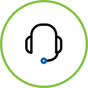

도시재생창업이란? 다양한 원인으로 인해 쇠퇴하는 도시의 물리적 측면뿐 아니라 사회적 · 경제적 측면을 활성화하는 동시에 지역사회의 활력을 되찾고 지역역량을 강화시킬 수 있는 아이템을 바탕으로 창업하는 것을 의미합니다.
창업아이템 주거/낙후공간 개선 도심에서 책과 함께 휴식을 즐길 수 있는 북스테이 주거 취약지 주거개선을 위한 마을관리사무소, 집수리 중개 콜센터 구도심 지역의 소규모 노인 통합복지 공동주택 다양한 창작활동을 하는 청년들을 위한 문화창작·거주공간 여성들에게 안전과 휴식을 제공하는 게스트하우스 빈집을 활용한 게스트하우스 운영 교육/지역 인력 양성 삶의 아름다운 마무리를 위한 프로그램 운영과웰다잉(well-dying) 디자이너 양성 사업 도심 속 실내 벽면녹화 문화 교육 및 관리 제주 구도심 걷기 여행상품 개발과 여행 해설사 양성 사업 마을정원사 양성을 위한 도심원예 교육과 공동정원 커뮤니티 운영 지역 역사문화 탐방을 연계한 전통주 교육과 체험 프로그램 운영 빈집을 활용한 게스트하우스 운영 마을공동체/플랫폼 활성화 지역주민의 소모임을 위한 도심 속의 마을 공유 거실 스스로 기획하고 떠나는 5060 여행 플랫폼 마을 노년층을 위한 복지 프로그램을 운영하는 브런치카페 맞벌이 부부의 초등학생 자녀 다함께 마을 돌봄사업 마을의 신중년의 커뮤니티를 통해 신마을 문화를 만드는 시니어 융합학교 문화예술/콘텐츠 향유 북촌 마을 주민들을 위한 문화와 체육이 결합된 복합문화공간 명인과 함께하는 뉴트로 스타일 취미공유 카페 책을 활용한 독서컨텐츠를 제공하는 복합문화 책방 연극 프로그램을 통한 문화예술체험을 제공하는 문화마을학교 주민들의 생활문화 향유를 돕는 생활악기 배움터와 모임 공간 지역자원 발굴 및 상품개발 재활용품을 기회 자원(판매, 수강료 등)으로 활용하는 업사이클링 복합문화공간 마을관리 서비스 및 지역자원을 활용한 농촌 체험 프로그램 운영 지역 특산물을 이용한 디저트와 책을 판매하는 카페형 서점 다양한 창작자의 작품을 생활용품, 의류 등으로 재생산하여 판매 재활용품과 자연물을 활용한 리빙·홈데코 공예 프로그램 운영과 제품 판매 천연비누 공방과 지역주민 취미 공유공간 겸 카페  심리/관계개선 청소년 우울과 불안 해소를 위한 원스톱 맞춤형 심리 상담 요리를 통한 심리지원 프로그램과 심리 활동가 양성서비스